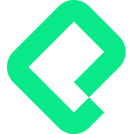
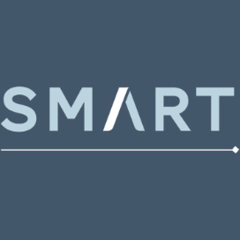
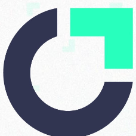
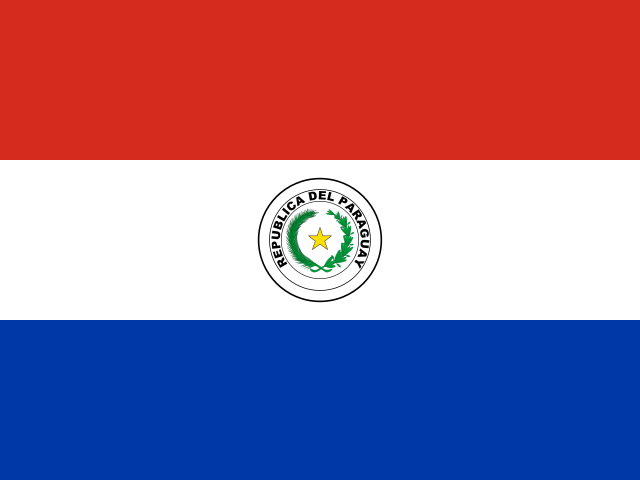

Julio Noguera
Independent Software EngineerParaguay
I build and scale Rails backends for startups.
- 10 years shipping software, 7+ of them in production Rails, for teams in Norway, the US, Colombia and Argentina.
- Today I work independently with RaceTracker and Luxus.
- Geolocation platforms, ERPs and APIs for mobile apps. Backend first, comfortable across the stack.
Open to new clients and full-time roles, working remotely with teams anywhere in the world.
Foundations
Business Informatics at Universidad Nacional de Itapúa, while building software for restaurants and small businesses and running IT for a faculty.
FR
FreelanceRemote
Desktop apps for small businesses and restaurants
Encarnación, Paraguay
- Built custom desktop apps for operations and customer management.
- Added Rails for the web parts. My first Ruby in production.
UNI
Universidad Nacional de ItapúaOn-site
Head of IT, Faculty of Agricultural Sciences
Encarnación, Paraguay
- Built and maintained the faculty's website.
- Ran the servers and kept every computer working, hardware and software.
Information Systems in Lisbon
Information Systems and Web and Multimedia Management at Universidade Nova de Lisboa.
Rails backend and education
At Platzi I coordinated course content in Spanish, Portuguese and English. At SMART ONE I built the Rails backend and the APIs behind a mobility app.

PZ
PlatziHybrid
Course Director · Student Advocate
Bogotá, Colombia

PZ- Led educators across countries to create courses in Spanish, Portuguese and English.
- Supported students and built multilingual content and learning paths.

S1
SMART ONEOn-siteFull-time
Backend Developer
Bogotá, Colombia

S1- Maintained and improved web applications in production, keeping them fast and secure.
- Built new features and the APIs behind the company's mobile apps.
- Reviewed and debugged code from junior developers.
Remote engineering for international teams
From Paraguay, I led geolocation and ERP projects for Geotec (Argentina) and delivered client projects for Dezerta Labs (California).

GT
GeotecRemoteFull-time
Backend Developer
Clients in Europe and South America

GT- Led geolocation and ERP projects for clients in Europe and South America.
- Owned backend features end to end: performance, scalability and security.
- Mentored less experienced developers and reviewed their code.
DL
Dezerta LabsRemotePart-time
Ruby on Rails Engineer
Santa Clara, US
- Built backend features for client projects with custom requirements, from the data model to production.
- Optimized performance and kept applications scalable and secure as client needs changed.
Independent software engineer
From Encarnación I work with RaceTracker in Norway and Luxus in Paraguay.
Registration, timing and live tracking for race organizers, from local road races to Norseman Xtreme Triathlon. I build across the Rails backend and the React front end.
Software for Paraguay's leading distributor of premium fashion: more than 30 international brands, wholesale across the country since 2011.
Languages & travel
 Español
Español
Avañe'ẽ Português
Português English
English
“Ani rekyhyjéti rejavyrô guarã. Ekyhyje nereñeha'ãiro guarã.”
Don't be afraid of getting it wrong. Be afraid of never trying.
Stack
Let's build something
A Rails backend to ship or to scale? Write to me in English, Español or Português.